Since 2017 © MIT CSAIL (HCI Engineering group) [redesign by
moji
].
All Rights Reserved.


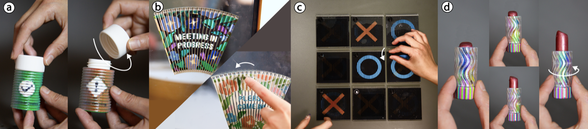
Figure 1: ShiftLens uses a mechanically actuated optical surface to create switchable appearances on 3D objects without electronics, demonstrated through (a) a chemical bottle that displays a safety warning when the cap is loose, (b) a door sign that toggles between two messages when flipped, (c) a tic-tac-toe board whose cells are controlled by knob for electronic-free interactions, and (d) a lipstick tube that shifts through a color gradient as the barrel rotates.
Interactive objects often rely on embedded electronics for dynamic surface appearance, which can increase fabrication complexity and reduce robustness in everyday settings. We present ShiftLens, a design and fabrication system for creating 3D objects with mechanically switchable surface appearances, enabling dynamic visual output without electronics. ShiftLens combines a lenticular lens layer with a patterned backplane to create an optomechanical surface that changes appearance through small, controlled shifts between the two layers. This allows objects to display distinct, high-resolution appearances that are discrete.
To make these transitions reliable, we introduce actuation mechanisms that translate inputs such as pressing, sliding, and rotating into repeatable surface changes. We also contribute a computational design tool that takes 3D geometry, desired appearances, and actuation types as input, and automatically generates the lenses, patterns, and actuation mechanism geometry for single-pass multi-material 3D printing.
Finally, we analyze the geometric constraints for supporting ShiftLens on curved surfaces, the lens design trade-offs that affect viewing range and pattern quality, and demonstrate ShiftLens through a range of applications.
Many interactive objects use visual feedback to indicate their states, typically through embedded electronics such as LEDs and screens. However, a broad class of everyday objects would benefit from visual feedback without power or electronics. For instance, objects exposed to water, chemicals, or mechanical stress make embedded electronics impractical and prone to damage. Designers of such objects often resort to static labels and permanent engravings, but static graphics cannot reflect changing states, modes, or user actions.
Interactive surface optics offer an alternative output channel: they can encode multiple visual states directly into an object’s surface and reveal them through physical interaction, without electronics or external displays. However, existing approaches do not yet support practical, motion-driven state switching on 3D objects. In HCI and digital fabrication, most fabricated optical surfaces are either viewpoint-dependent, so the displayed image is determined by where the observer stands, or limited to planar constructions that do not readily extend to curved object geometries.
Prior approaches illustrate the two sides of this gap. Lenticular Objects demonstrates that multi-material 3D printing can embed lenticular optics onto curved surfaces to produce different appearances from different viewpoints. Yet the visible state is determined by the viewpoint rather than by intentional input, making the technique unsuitable for reliable on-demand state communication. Conversely, occlusion-based systems, such as FabObscura, support repeatable switching through relative shifts between a mask and a substrate, enabling discrete visual states. However, these systems are largely restricted to planar surfaces, often leave opaque grid lines visible, and do not provide a general method for supporting such switching on curved 3D forms.
We present ShiftLens, a design and fabrication system for creating 3D objects with mechanically switchable surface appearances. ShiftLens combines a lenticular lens layer with an underlying pattern layer to create a hybrid optomechanical surface that offers a distinct class of passive, object-state-coupled surface output. By introducing a small, controlled displacement between the two layers, the object reveals different surface patterns. Because the same mechanical motion that changes an object’s functional state can also select its visible state, everyday artifacts can become self-reporting without electronic sensing, batteries, or embedded display hardware. Depending on how this motion is constrained, the surface can support two-state, multi-state, or smooth visual transitions.
These transitions cannot be realized on any arbitrary 3D geometry. To maintain alignment during actuation, the lens and pattern layers must preserve a consistent spatial relationship throughout motion. We formalize the compatible surface classes for ShiftLens as translation, revolution, and combined screw-like surfaces, and use this formulation to drive an end-to-end computational design tool. Given a target geometry, desired visual states, and the type of actuation, the tool automatically generates the lens array, pattern layer, and actuation mechanism geometry for single-pass, multi-material 3D printing. To support active interaction, we introduce three actuation mechanisms, a switch, roller, and knob, that couple user input to precise lens-layer displacement. Alternatively, ShiftLens can be coupled with motion already present in an object.
We further analyze the optical tradeoff between viewing range and pattern visibility, and optimize lens geometries that support up to 10 display states under current fabrication constraints. Finally, we demonstrate ShiftLens through six fabricated examples spanning all three geometry types and a range of actuation mechanisms.
In summary, we contribute:
ShiftLens's core design includes its optical working principle, the surface geometries that support relative motion, and the actuation mechanisms that enable interactive appearance change.
ShiftLens is a design and fabrication system for creating 3D objects with mechanically switchable surface appearances. The core idea is to encode multiple visual states into an object’s surface and reveal them through small, controlled relative motion between two optical layers. This allows a physical object to display distinct surface patterns without embedded electronics, screens, or external projection.
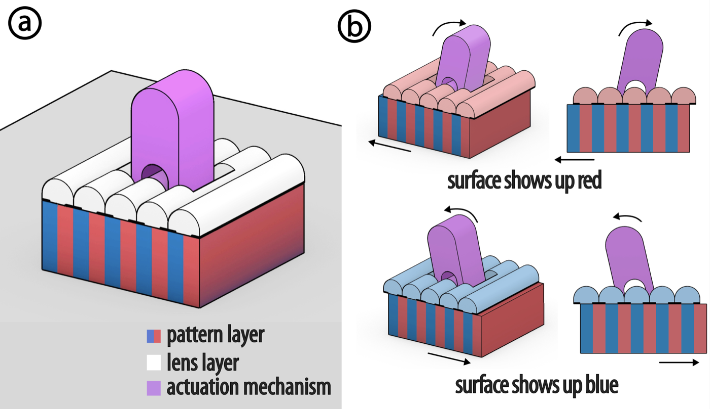
Figure 2: ShiftLens working principle. (a) ShiftLens optical layers. (b) Actuation mechanisms are moved to trigger the surface appearance change.
A ShiftLens structure consists of two optical layers: a lens layer on top and a pattern layer underneath (Figure 2a). The pattern layer contains interleaved image strips corresponding to different visual states. The lens layer consists of a cylindrical lens array with integrated opaque regions that selectively reveal portions of the pattern layer. In the aligned state, the viewer sees one visual state; when the lens layer shifts laterally relative to the pattern layer, a different set of strips becomes visible, and the surface appearance changes (Figure 2b).
Because state switching is achieved through relative displacement rather than viewpoint alone, ShiftLens supports intentional, user-controlled transitions between surface appearances. Depending on the motion's constraints, the transition can be two-state, multi-state, or a smooth transition driven by a smooth mechanical motion sweep. For example, an actuation mechanism can snap between two fixed offsets to create a stable two-state display (Figure 2b), or sweep smoothly across multiple offsets to support smooth visual transitions.
The switchable appearance in ShiftLens relies on controlled relative motion between the lens layer and the pattern layer. For this motion to remain smooth and visually stable, the two layers must maintain a consistent spatial relationship during actuation and avoid colliding. This requirement imposes a geometric constraint on the surfaces that can support a ShiftLens structure.
By Chasles' theorem, any rigid body motion can be decomposed into a screw motion: a rotation about a fixed axis combined with a translation along that same axis. A surface is compatible with ShiftLens if and only if it can be generated by sweeping a curve along such a screw motion. In practice, this yields three families of surfaces that are supported (Figure 3a). Translation surfaces are generated by sliding a curve along a straight path, producing flat or extruded forms. Surfaces of Revolution are generated by rotating a curve around a fixed axis, producing cylindrical, conical, or bowl-like shapes. Combined surfaces follow a helical motion, combining rotation and translation simultaneously, producing screw-like or twisted forms. Surfaces that do not follow one of these motion families are not compatible with ShiftLens. For example, surfaces defined by sine-wave motion paths or non-uniform scaling cannot maintain the required spacing during actuation (Figure 3b). In such cases, shifting the lens layer would cause collisions or misalignment.
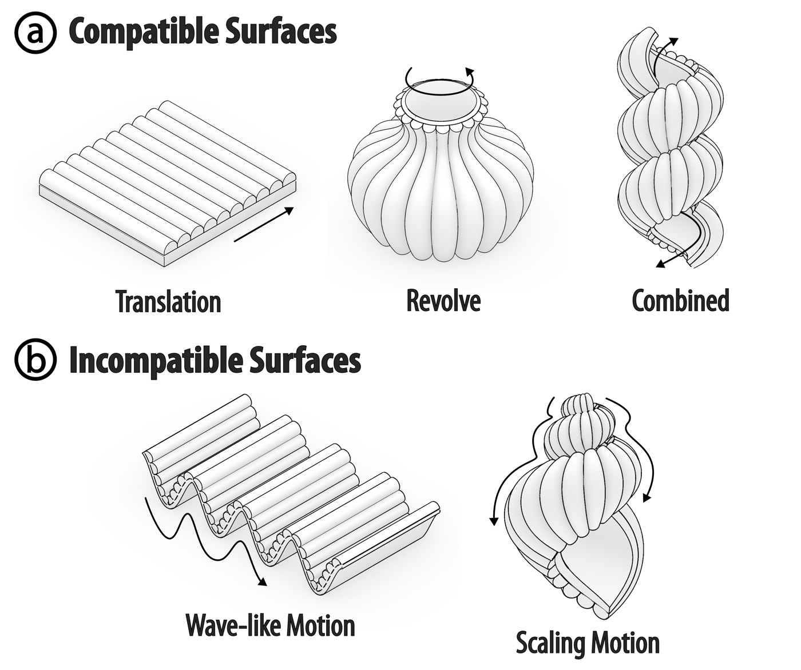
Figure 3: Compatible and incompatible ShiftLens surfaces. (a) Three families of compatible surfaces: translation surfaces, surfaces of revolution, and combined surfaces. (b) Two examples of incompatible surfaces.
To support this constraint in the ShiftLens design tool, users define a compatible surface by choosing one of the three supported motion families and specifying its generator curve and motion parameters.
To reveal different visual states, ShiftLens requires a translational or rotational shift between the lens and pattern layers. This motion can either come from an interaction already present in the object, such as rotating the body of a lipstick, or from an integrated actuation mechanism (Figure 4). In the first case, ShiftLens can be embedded directly into the object and coupled to its native interaction without introducing a separate control. When no suitable native motion is available, ShiftLens provides three built-in actuation mechanisms that can be directly integrated into the object (Figure 5). Through these mechanisms, users can switch the surface appearance by direct physical interaction, producing two-state or multi-state changes, or smooth visual transitions, depending on the actuation type.
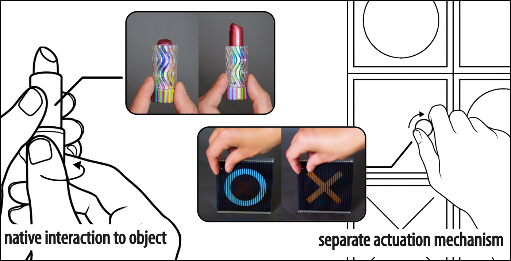
Figure 4: Two types of interaction with ShiftLens. The user either leverages an existing integrated shifting interaction within the object or adds an external interaction from an actuation mechanism.
Switch: A switch provides a two-state toggle between two visual states (Figure 5a). The lens layer is coupled to a rocker mechanism that travels between two fixed end positions, each corresponding to a distinct appearance. The switch is connected to the lens layer and the pattern layer via two rods; the rod lengths and pivot geometry are calculated so that flipping the rocker to either end position displaces the lens layer by exactly the offset required to transition between the two visual states. Because the motion is mechanically bounded, the switch supports exactly two visual states.
Roller: A roller supports smooth rotational control over the lens layer (Figure 5b). It is constructed using a rack-and-pinion mechanism: a pinion gear is mounted on a shaft attached to the lens layer, and engages a linear gear track fixed to the pattern layer. As the user rolls the cylindrical gear surface, the shaft rotates the pinion, which drives the lens layer linearly along the rack, enabling smooth transitions across visual states. A roller supports an arbitrary number of viewpoints in a smooth sweep, making it suitable for applications such as navigating a sequence of states or adjusting a parameter.
Knob: A knob also provides rotational control, but with an upright form factor (Figure 5c). It is designed with a larger knob above the lens layer that is coaxially connected to a small pinion gear seated in a cavity in the pattern layer. On one side of the cavity, the pinion engages a rack, converting knob rotation into linear translation of the lens layer; on the opposite side, detent notches in the cavity wall engage the pinion at discrete positions for multi-state selection. A knob can operate either in smooth mode, supporting smooth transitions across arbitrary viewpoints, or in multi-state mode with detents, supporting a fixed number of distinct states. This flexibility makes the knob suitable for both smooth control and multi-state selection.
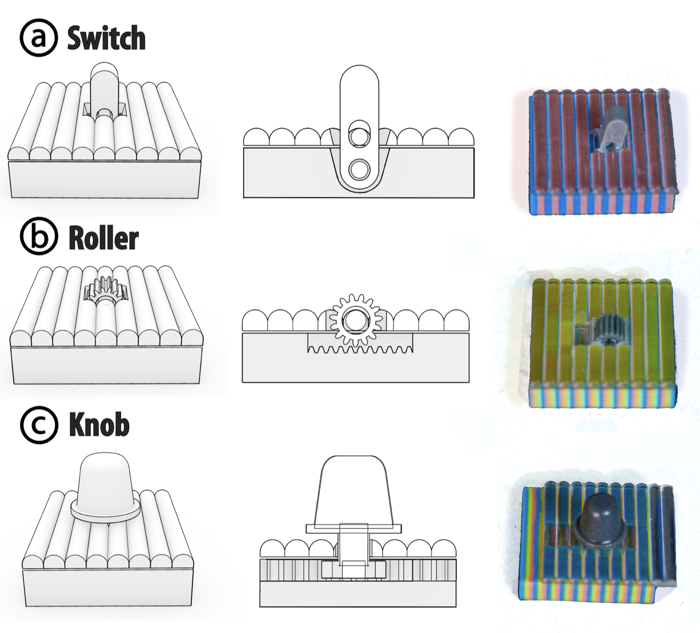
Figure 5: Three actuation mechanism types. For each type, the figure shows the object form, the internal mechanism, and the combined assembly. (a) Switch: rocker toggle with a snap mechanism for two-state switching. (b) Roller: cylindrical surface coupled to a gear mechanism for smooth lens shifting. (c) Knob: compact rotational control with optional detents for multi-state or smooth transitions.
To support users in designing ShiftLens objects, we developed a design tool within the existing 3D modeling software Rhino, using the Grasshopper scripting environment and the Synapse Library. Designers start by defining their desired surface, then choose an actuation mechanism. The design tool prompts them to import images for each visual state, and the system generates the optical layer, pattern layer, and actuation mechanism geometry for fabrication. We demonstrate the design tool workflow through the example of a fan-shaped door sign controlled with a switch.
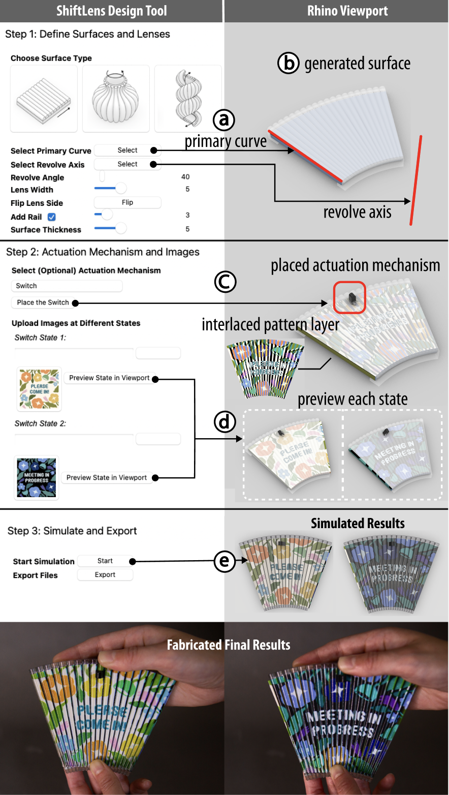
Figure 6: ShiftLens design tool workflow illustrated with a fan-shaped door sign. (a) The user selects a rotation surface type and picks a primary curve and revolve axis. (b) The revolved geometry is previewed in the viewport. (c) The user selects a switch as the actuation mechanism and places it on the surface. (d) The user uploads images for each switch state, and the textured result is previewed in the viewport. (e) The simulated and fabricated results at the two switched states.
The designer first specifies the surface geometry by selecting a motion type: translation, revolve, or combined. For a revolved surface, the designer picks a primary curve and a revolve axis, then uses a slider to set the sweep angle (Figure 6a). For a translation surface, the designer selects a primary curve and a translation direction; for a combined surface, the surface first rotates and then translates to a specified extent along the axis. Once the motion parameters are set, the viewport displays a live preview of the resulting surface geometry (Figure 6b).
The designer then adjusts the lens width, i.e. the pitch between adjacent lenses, which defaults to 3 mm. For revolved and combined surfaces, the lens width varies across the surface, so the tool computes the geometry to ensure that 90% of the lens array meets or exceeds the specified width. Additional options allow the designer to choose which side of the surface carries the lens array, whether to include guide rails along the edges to constrain the sliding motion, and the thickness of the pattern layer.
After defining the surface and lens width, the designer can select an actuation mechanism from a dropdown menu and then click a location on the front of the lens to place it. Because each mechanism requires internal structures, the viewport displays a green preview when the mechanism can be successfully integrated and a red preview when it exceeds the available area (Figure 6c).
The choice of mechanism determines the number of visual states: a switch yields two states, a knob supports up to five, and a roller supports up to ten. The designer is then prompted to assign an image to each state by selecting an image file. The mechanism geometry and the computed interlaced pattern layer are immediately previewed in the viewport; the designer can also click the “Preview State in Viewport” button next to any state to inspect how that texture appears on the surface (Figure 6d). Alternatively, the designer may skip the actuation mechanism entirely and manually define up to 10 states.
Once the states and images are defined, the designer clicks “start” to run a simulation. The design tool optimizes the lens geometry for the specified number of states and generates a rendered view of the ShiftLens object at each state.
When satisfied, the designer clicks “export” to output the entire object as a VRML file for 3D printing. The optics, pattern layer, and actuation mechanisms are all printed in one pass on a Stratasys J55 using VeroClear and VeroVivid CMYW materials, with WSS150 water-soluble support. Figure 6e shows the simulated preview alongside the fabricated object at both switch states.
We define the lens geometry parameters and describe how we identify the design that best balances viewing range and pattern visibility for a target number of display states. We then fabricate and photograph a set of lenses to validate that the physical results align with our computation.
We parameterize a lens cross-section using three geometric variables: the pitch $p$, the lens radius $r$, and the substrate height $h$ (Figure 7a). The pitch $p$ specifies the lateral spacing between adjacent lenses. Increasing $p$ allows more states to be encoded within a single period. Given a chosen pitch $p$, the system's optical behavior is controlled by $r$ and $h$. The radius of curvature $r$ controls the degree of refraction: smaller values produce more strongly curved lenses that magnify the pattern layer image, whereas larger values approach a flatter profile. The substrate height $h$ defines the distance between the lens and the pattern layer; increasing $h$ narrows the viewing range but enables more discrete switching between adjacent image segments.
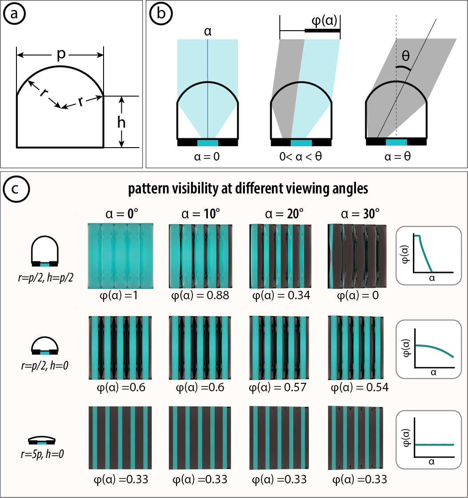
Figure 7: Lens geometry parameters. (a) Cross-section of a lenticule with radius $r$, substrate height $h$, and pitch $p$. (b) Viewing angle $\alpha$, pattern visibility $\phi(\alpha)$, and viewing range $\theta$: at normal incidence ($\alpha = 0$, left), at an intermediate angle ($0 < \alpha < \theta$, center), and at the viewing range limit ($\alpha = \theta$, right). (c) Pattern visibility at different lens designs, each photographed at $\alpha =$ 0°, 10°, 20°, 30°.
For a given lens design $(r, h)$, we characterize its optical behavior using the viewing angle $\alpha$, the pattern visibility $\phi(\alpha)$, and the overall viewing range $\theta$ (Figure 7b). We define these terms as follows:
Figure 7c shows three representative lens designs rendered at viewing angles $\alpha =$ 0°, 10°, 20°, and 30°, with the corresponding values of $\phi(\alpha)$ labeled at each angle. The results illustrate how pattern visibility varies with lens geometry and viewing angle: decreasing $r$ produces a more curved lens and increases peak pattern visibility; increasing $h$ at a fixed $r$ improves coverage uniformity across viewing angles at the cost of reduced viewing range. All values are obtained from the simulation.
We optimize the lens design based on the tradeoff between pattern visibility $\phi(\alpha)$ and viewing range $\theta$. To formalize this tradeoff, we introduce a minimum visibility threshold $\phi_\text{min}$, a user-defined threshold that specifies the minimum acceptable pattern visibility for a viewing angle to be considered valid. For each candidate lens design $(r,h)$, we define its effective viewing range as the largest half-angle such that $\phi(\alpha) \geq \phi_\text{min}$ for all $|\alpha| \leq \theta$.
The largest half-angle at which $\phi(\alpha) \geq \phi_\text{min}$ for all $|\alpha| \leq \theta$ becomes the objective to maximize. A higher $\phi_\text{min}$ demands that a larger fraction of the aperture shows the intended strip at every angle, which constrains the design space and reduces the achievable viewing range. Lowering $\phi_\text{min}$ tolerates more partial occlusion, allowing a wider viewing range at the cost of reduced image fidelity.
To evaluate candidate designs, we perform ray tracing for each $(r, h)$ pair using 64 rays per viewing angle. We sample $r$ linearly over 50 values from $p/2$ to $15p$ and $h$ linearly over 50 values from $0$ to $2p$, yielding 2,500 candidate lens geometries. For each candidate, we compute $\phi(\alpha)$ for viewing angles from $0^{\circ}$ to $90^{\circ}$, and select the design $(r^*, h^*)$ that maximizes the largest half-angle over which coverage remains at or above the threshold:
\[ (r^*, h^*) = \arg\max_{(r,h) \in \mathcal{G}} \max\bigl\{\,\alpha \geq 0 : \phi(\beta;\,r,h) \geq \phi_\text{min}\ \forall\,\beta \in [0,\alpha]\,\bigr\} \]
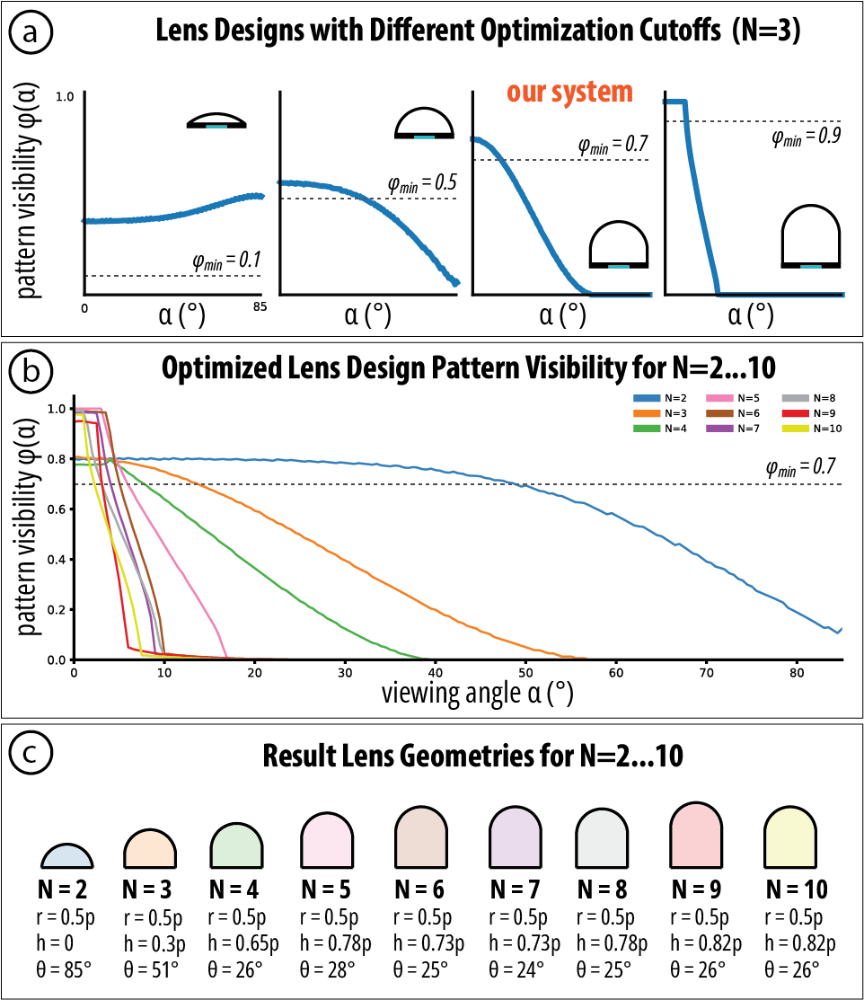
Figure 8: Lens design optimization. (a) Optimal lens design for $N = 3$ at four different cutoffs ($\phi_\text{min} = 0.1, 0.5, 0.7, 0.9$), each shown with its $\phi(\alpha)$ curve and cross-section silhouette; our system ($\phi_\text{min} = 0.7$) is highlighted. (b) Selected optimal $\phi(\alpha)$ curves for $N = 2$ to $10$; dashed line marks $\phi_\text{min} = 0.7$ and curves shift leftward as $N$ increases. (c) Resulting lens cross-sections for $N = 2$–$10$, each labeled with $r$, $h$, and $\theta$.
As an example, Figure 8a shows the optimal lens design for a three-state display ($N = 3$) under four different thresholds ($\phi_\text{min} = 0.1, 0.5, 0.7, 0.9$). Increasing the threshold shifts the optimal design toward a more curved lens with a higher substrate height, yielding greater pattern visibility but a substantially narrower viewing range.
While different applications may call for different threshold values, the samples in this paper use $\phi_\text{min} = 0.7$, which empirically yields a good balance between pattern visibility and viewing range. Figure 8b shows the selected optimal $\phi(\alpha)$ curve for each $N = 2, \ldots, 10$, and Figure 8c shows the resulting lens cross-sections, each labeled with its optimal $r$, $h$, and viewing range $\theta$.
Apart from the optical tradeoffs discussed above, the number of display states $N$ is independently bounded by the fabrication resolution of the pattern layer. Because each state occupies one strip of width $p/N$, and our process cannot reliably print features smaller than 200 μm, we require that $N \leq p\,/\,200\,\mu\text{m}$. In principle, increasing $p$ allows more states to be encoded, but in practice, larger pitches make the lens array visibly coarse. A 5 mm pitch satisfies this constraint for all $N$ up to 25 while remaining perceptually unobtrusive, making it a practical choice for covering the full range of state counts we consider.
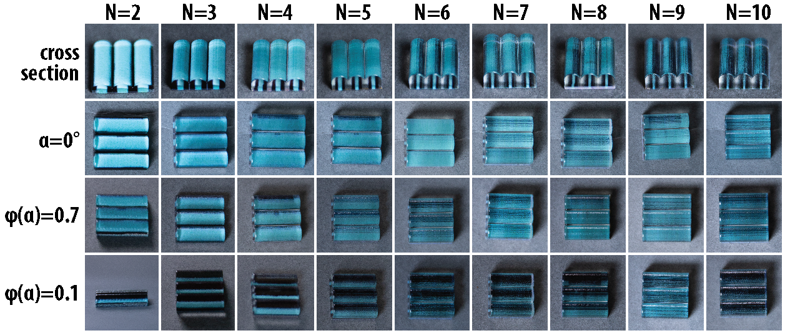
Figure 9: Fabricated lens geometries for $N = 2$ to $10$ display states. Each column is one value of $N$; rows show (top to bottom): lens cross-section profiles, photographs at normal incidence ($\alpha = 0$°), photographs at the $\phi_\text{min} = 0.7$ threshold angle, and photographs at the $\phi = 0.1$ cutoff angle.
To validate that the fabricated geometries match the simulation, we 3D printed the optimal lens design for each $N$ from 2 to 10 at a 5 mm pitch. Figure 9 shows the fabricated lenses in four rows: cross-section profiles, photographs from directly above the lens ($\alpha = 0$°), at the $\phi_\text{min} = 0.7$ threshold angle, and at the $\phi(\alpha) = 0.1$ cutoff angle. At normal incidence, all designs from $N = 2$ to $N = 10$ produce clear, legible patterns, confirming agreement with the simulation across the full range of state counts. While in theory only 70% of the pattern is visible at $\phi(\alpha) = 0.7$, slight surface imperfections in the fabricated lenses introduce surface diffusion, causing the partially occluded pattern to remain visible, albeit dimmer. Across different numbers of states, high-$N$ lenses exhibit pattern disappearance at smaller viewing angles, confirming their narrower viewing range.
On curved surfaces lenses at different positions face the viewer at different local angles. To quantify this effect, we introduce the object pattern visibility $\phi_o(\theta)$, defined as the average per-lens pattern visibility across all visible lenses, weighted by their visible areas. We evaluated this metric on a representative revolution cylinder of 50 mm diameter, with 15 front-visible lenses at a pitch of $p = 5$ mm. Figure 10a plots $\phi_o$ across $\phi_\text{min} = 0.1$–$0.9$ and $N = 2$–$10$. Lowering $\phi_\text{min}$ can distribute visibility across more peripheral lenses, but at the cost of lower local pattern coverage and image fidelity. Figure 10b shows ray-traced front views of the evaluation cylinder: higher thresholds produce brighter but increasingly center-weighted patterns, whereas lower thresholds spread dimmer visibility across the full surface.
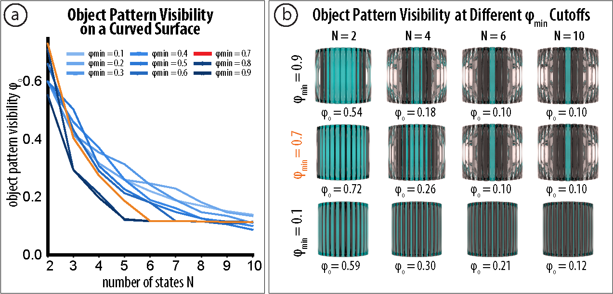
Figure 10: Object pattern visibility on a curved surface. (a) $\phi_o$ on the evaluation cylinder for optimal lens designs at $\phi_\text{min} = 0.1$–$0.9$ and $N = 2$–$10$; the dashed line marks the 0.10 floor, where only the central lens still shows the pattern. (b) Ray-traced front views for $\phi_\text{min} = 0.7$ (our system) and $\phi_\text{min} = 0.1$, each labeled with its $\phi_o$: higher thresholds yield brighter but center-weighted patterns at high $N$, whereas lower thresholds distribute dimmer visibility across the surface.
To showcase the range of surfaces and actuation methods ShiftLens supports, we fabricated six application examples spanning three use cases: objects that passively expose their own mechanical state, surfaces that encode motion as expressive animation, and electronics-free displays that support signage and interaction.
Some objects already have a meaningful binary state, such as whether a bottle cap is tightened or a pen tip is extended, but offer no visual feedback about that state. ShiftLens can turn the object's own surface into a passive readout, revealing the current state without any added electronics. We illustrate this with two examples: a chemical storage bottle and a click pen.
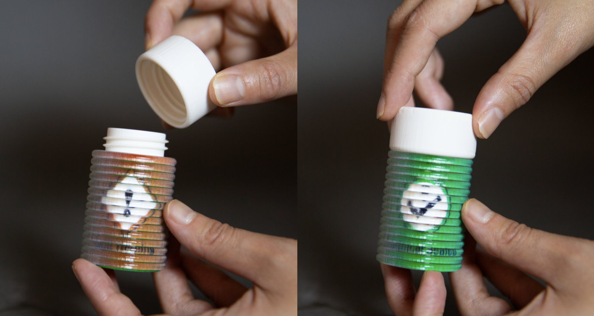
Figure 11: A chemical bottle with an embedded ShiftLens structure. The cap's outer rim pushes the lens layer: a loose cap reveals a hazard warning symbol (left), while a fully tightened cap shifts the lens to display a checkmark (right).
In a chemical storage room, an improperly sealed bottle can pose a safety hazard, and a slightly loose cap is difficult to detect at a glance. Figure 11 shows a chemical bottle whose ShiftLens structure is embedded in the bottle body so that the cap acts directly on the lens layer. As the cap is tightened, its outer rim pushes the lens layer, producing a translation shift relative to the pattern layer beneath. When the cap is fully tightened, the surface displays a checkmark; when the cap is loose, it reveals a hazard warning symbol instead.
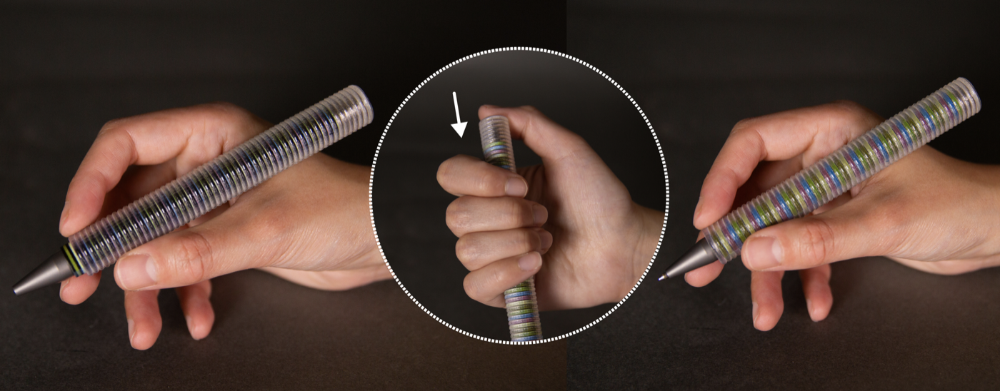
Figure 12: A click pen with a ShiftLens structure spanning the barrel. Extending the tip (left) shifts the lens layer to display one pattern; retracting the tip (right) returns the layers to their default alignment and reveals the alternate pattern.
Figure 12 shows a click pen that uses a similar mechanism to reflect its own on/off state. The lens layer is attached to the press button, while the pattern layer is fixed to the pen body. When the tip is extended for writing, the relative displacement between the two layers produces one pattern on the barrel surface; when the tip is retracted, the layers realign to display a different pattern. The visual state is thus coupled directly to the click mechanism. Both examples use a translational ShiftLens surface and require no actuation mechanism.
ShiftLens can present changing visual information without electronics, making it suitable for settings where embedded digital displays are impractical, such as outdoors, in wet environments, or in places without power. We illustrate this with two examples: a switchable door sign and an interactive tic-tac-toe game.
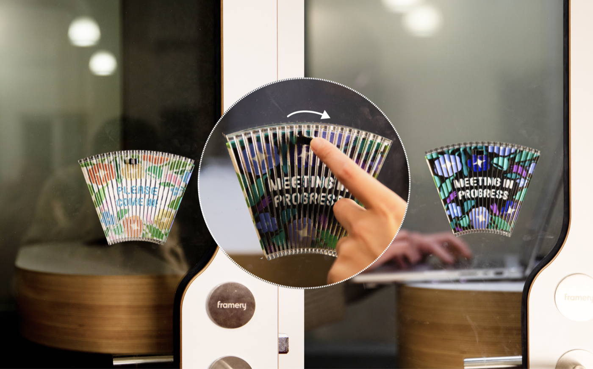
Figure 13: A fan-shaped door sign with an embedded ShiftLens structure. Flipping the switch shifts the lens layer to display either “Please Come In” (left) or “Meeting in Progress” (right), providing a passive, electronics-free status indicator.
Figure 13 shows a fan-shaped door sign that uses a ShiftLens switch to toggle between “Meeting in Progress” and “Please Come In,” giving passersby an electronics-free status indication. The surface is generated by revolving a straight line along a central axis, and uses a switch actuation mechanism to change the visible message.
Figure 14 shows a tic-tac-toe board that demonstrates interactive use. Each cell on the board contains a ShiftLens structure controlled by a knob. Players take turns rotating the knob on their chosen cell to cycle through and select their symbol. The board's surface is generated by translating a straight line paired with a knob actuation mechanism.
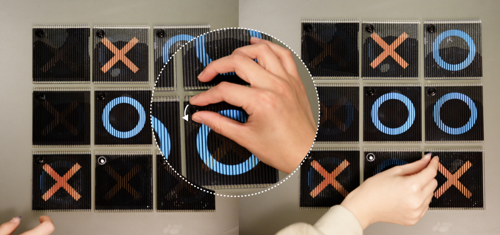
Figure 14: An interactive tic-tac-toe board in which each cell contains a ShiftLens structure driven by a knob. Rotating the knob on a cell allows each plate to display a circle, a cross, or nothing, enabling gameplay without any electronics or power source.
ShiftLens can also turn physical motion into a continuous visual animation, making the surface itself expressive rather than merely informative. We illustrate this with two applications: a lipstick tube and a candle lampshade.
Figure 15 shows a lipstick tube that uses a roller actuation mechanism so that as the user rotates the barrel to extend or retract the product, the outer surface simultaneously shifts through a color gradient. The motion the user already performs becomes part of the visual experience. The surface is generated by revolving a sine wave around an axis, yielding a cyclically varying pattern that responds directly to barrel rotation.
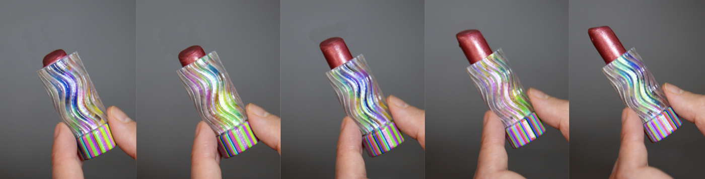
Figure 15: A lipstick tube with a ShiftLens structure driven by a roller mechanism. Rotating the barrel to extend or retract the product shifts the lens layer along the sine-wave surface, cycling the outer casing through a continuous color gradient.
Figure 16 shows a candle lampshade whose ShiftLens structure produces a fire-like animation on the shade surface. The surface is a combined rotating and translating surface that rotates and translates along the lampshade's central axis and is actuated by a roller mechanism. As the user turns the roller, the layered pattern cycles through flame-like imagery, giving the shade a dynamic, flickering appearance without any electronics.
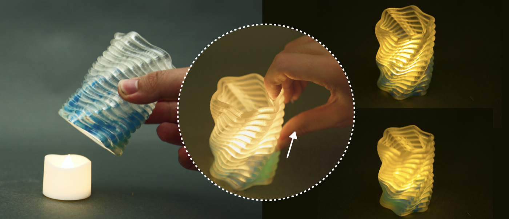
Figure 16: A candle lampshade with a ShiftLens structure driven by a roller mechanism. Turning the roller shifts the combined surface, creating a flame-like animation on its outer surface.
Design Guidelines: Based on our technical evaluation and design exploration, we derive four guidelines for designing with ShiftLens. First, for pitch $p$, 3–5 mm is generally suitable for handheld-scale objects, providing sufficient print quality while maintaining visual resolution. Second, for lens geometry, smaller $r$ increases peak pattern visibility but narrows the viewing cone, while larger $h$ improves visibility uniformity across lenses at the cost of a reduced viewing range; in our examples, the default $\phi_\text{min}=0.7$ provides a good balance and should be lowered only when wider viewing angles are needed. More generally, $\phi_\text{min}$ is not a universal perceptual constant but a design threshold that trades local pattern coverage against viewing range, and should be selected jointly with the number of states $N$, the surface curvature, and the application needs: low-$N$, high-visibility settings are preferable for safety and status indicators, whereas higher-$N$ or lower-threshold settings are better suited to animation or decorative transitions where partial, center-weighted visibility is acceptable. Third, the same overall form can often be constructed from different compatible motion families, which, in turn, determine the direction of relative movement and the resulting interaction. For example, a cone can be realized by translating a closed curve (e.g., a pen and a bottle), revolving an open curve (e.g., a lipstick), or combining rotation and translation (e.g., a candle lampshade). Finally, for actuation, designers should couple ShiftLens to native object motion when available to avoid additional hardware; otherwise, a switch is best suited for two-state displays, a roller for smooth animations, and a knob for multi-state selection.
Effect of Surface Curvature on Viewing Range: Our system optimizes viewing from directly above each lens, which means surface geometry affects the consistency of viewing angles across the lens array. For translational surfaces, where the surface sweeps along a straight path, all lenses face the same direction, and thus the effective viewing range is uniform across the entire surface, and the optimization results apply directly. For revolution and combined surfaces, however, the surface curves around an axis and lenses at different angular positions face the viewer more or less obliquely; lenses at the most oblique positions experience a reduced effective viewing range not captured by the flat-surface optimization. Our object pattern visibility analysis quantifies this effect. Designers working with such curved surfaces could adjust the lens geometry by selecting a lower $\phi_\text{min}$ to achieve a larger viewing range, especially at a larger number of states, at the cost of lower local pattern coverage.
Mechanical Robustness: To assess the durability of the actuation mechanisms, we fabricated a 50 mm × 50 mm specimen with a 3 mm lens width, a 5 mm backplane thickness, and a 3 mm rail thickness for each mechanism. Each mechanism was actuated 200 times, where each cycle produced one state change for the switch and the knob, and one full roll for the roller. We observed no visible damage from intended use. For robust interaction, we recommend keeping the rail and backplane at or above these tested thicknesses, and relying on mechanically bounded travel, such as the switch's end positions and the knob's detents, to prevent over-extension during repeated use.
Inverse Computation of Surface Geometry: The current ShiftLens system supports forward generation: given the primary curve and movement parameters, it produces the lens geometry, surface patterns, and actuation mechanisms. While this pipeline covers the primary design workflow, supporting inverse generation would open up more design freedom and better leverage existing surface mappings. In future work, we plan to support inverse computation by allowing users to specify a target mesh, and letting the system find the closest compatible surface for shifting and candidate lens designs that produce the desired shift behavior.
Combined Movement Direction: The current ShiftLens system supports shifting along a single direction. While this covers the primary use cases demonstrated in this work, such interaction can be extended to support shifting in multiple directions along a 2D surface. This could be achieved by extending the occlusion geometry to encode parallax along two independent axes and pairing it with a 2D input widget, such as a joystick, to control movement in both directions.
We presented ShiftLens, a design and fabrication system for creating 3D objects with mechanically switchable surface appearances without electronics. By combining a lenticular lens layer with a pattern layer, ShiftLens enables discrete, high-resolution visual state transitions through small, controlled mechanical shifts. We presented the full pipeline, from the optomechanical surface structure and geometric analysis of compatible curved forms, to actuation mechanism designs and a computational tool for single-pass multi-material fabrication. ShiftLens opens new possibilities for encoding interactivity into physical objects: everyday items that convey safety status, animate in response to use, or support screen-free interaction, all fabricated as a single passive print.
We thank Marwa AlAlawi for insights on mechanically triggered structures, and Jiaji Li for brainstorming the applications with us and for helping take the photographs. We also thank Nguyen Duc Thang (thang010146 on YouTube), whose animated mechanical mechanism videos inspired our actuation mechanism designs.